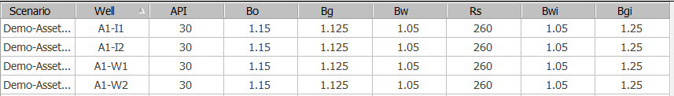
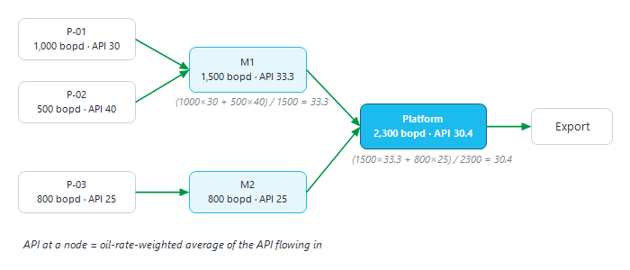

|
PVT for voidage and API tracking
1. Overview — two different PVTs in Precept
Precept uses PVT data in two places. Do not confuse them:
•Well PVT (this page) — one row of constant values per well: API, Bo, Bg, Bw, Rs, Bwi, Bgi. It is entered from Decline Curves. It converts production and injection to reservoir conditions for voidage, and gives the oil API for API tracking.
•Material Balance PVT — pressure-dependent black-oil tables (Bo, Bg, Rs, viscosities versus pressure) per reservoir, on the "PVT" tab of the Material Balance window. It drives the tank balance, the inflow and the lift curves when a scenario forecasts with Material Balance or Simulation (see Material Balance).
2. Enter the well PVT
1.Click "Decline Curves" on the main ribbon and select the scenario (see Decline curves: Production and Injection potentials).
2.Click "PVT" in the "Import Data" group of the Decline Curves ribbon. The "Import Data" window opens on "Import PVT data".
3.The table lists every well of the scenario, and every node of type Source, with the values saved before. Wells with no data yet show default values (API 30, Bo 1.15, Bg 1.25, Bw 1.05, Rs 260, Bwi 1.05, Bgi 1.25). Edit the values or paste them from Excel.
4.Click "Save". Save replaces the whole PVT table of the scenario.
If Bg and Bgi differ on the first row, Precept warns you: injected gas is usually the produced gas, so the two values are normally the same. "Copy pattern property to all scenario in Project" copies this PVT (with the pattern data) to the other scenarios of the project.

The well PVT table.
|
Column
|
Meaning (oilfield units)
|
|
API
|
Oil gravity, °API. Used for API tracking only.
|
|
Bo
|
Oil formation volume factor, rb/stb.
|
|
Bg
|
Gas formation volume factor of the produced free gas, rb/Mscf.
|
|
Bw
|
Produced water formation volume factor, rb/stb.
|
|
Rs
|
Solution gas-oil ratio, scf/stb. Used to split the produced gas into dissolved and free gas.
|
|
Bwi
|
Injected water formation volume factor, rb/stb.
|
|
Bgi
|
Injected gas formation volume factor, rb/Mscf.
|
3. Voidage at reservoir conditions
With the PVT, Precept converts each well's surface rates to reservoir barrels:
•Producer: Production (rb) = Oil × Bo + Water × Bw + Free gas × Bg, with Free gas = Produced gas − Rs × Oil (taken as zero when negative).
•Injector: Injection (rb) = Water injection × Bwi + Gas injection × Bgi.
Voidage = Production (rb) − Injection (rb), summed over a pattern with the pattern allocation factors, over a reservoir, or over the field. Historical voidage needs PVT for every well of a pattern; voidage per pattern needs the patterns to be defined (see Patterns). In the forecast, voidage is calculated when "Voidage" is ticked in the settings of the scenario.
If the scenario forecasts with Material Balance, the reservoirs modelled with Material Balance use the Material Balance PVT at the current reservoir pressure instead of the well PVT, for both production and injection. If a scenario has no well PVT at all, the forecast uses the default values above and reports "No PVT data".
4. API tracking
At every forecast time step, Precept follows the oil of each producer, and of each Source node, through the network. The API of each node is the average of the API of the oil arriving at it, weighted by oil rate. When a node splits its oil between several outlets, each outlet gets its share of the oil with the same API. The result is reported as the parameter "API" in the forecast results, for example to check the quality of an export blend.

Figure 1 — API tracking: the API of a node is the oil-rate-weighted average of the API of the oil flowing into it.
|